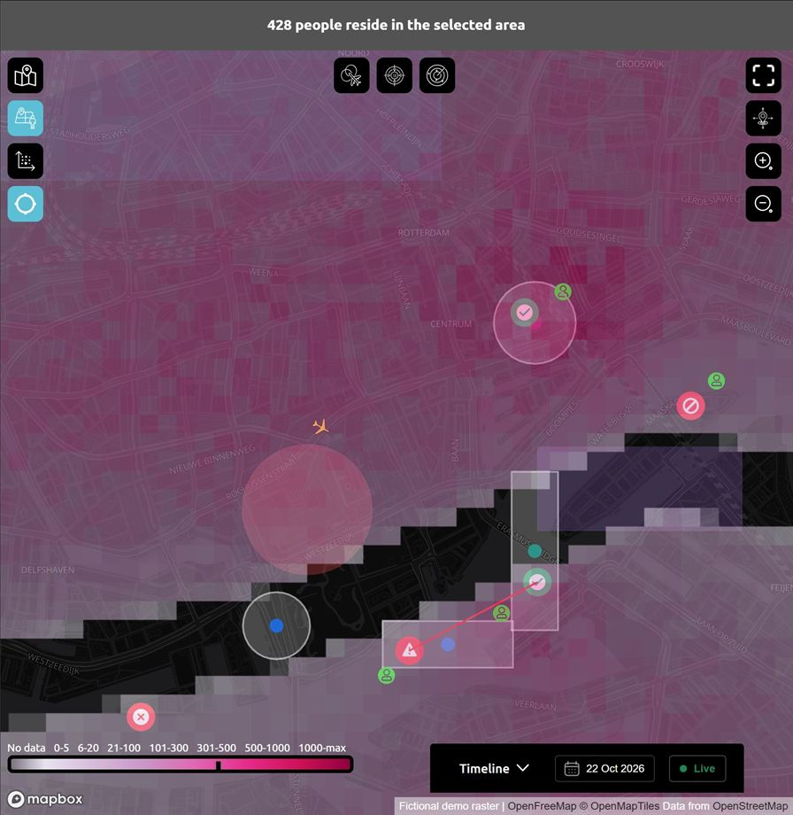
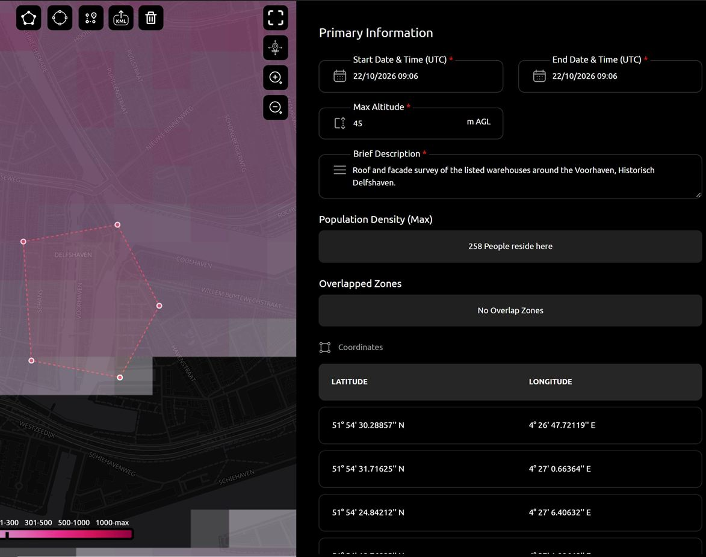

Case 07 · AstraUTM platform
Population density on the map
A flight over people carries more risk. I added a population layer to the map and an estimate of how many people live under a point or a planned flight area.
- Mapbox GL
- TanStack Query
- Zustand
The problem
Approvers and pilots had no quick way to see how populated an area was before a flight.
My part
- A raster population layer with a toggle and a legend.
- A click on the map shows how many people live within 100 m.
- A banner with the estimate for the area drawn in a new flight request.
- A hook that fetches the estimate and keeps the result in a shared Zustand store for the map and banner.
Result
Population is visible on the map and in every new flight request, before anyone approves it.



